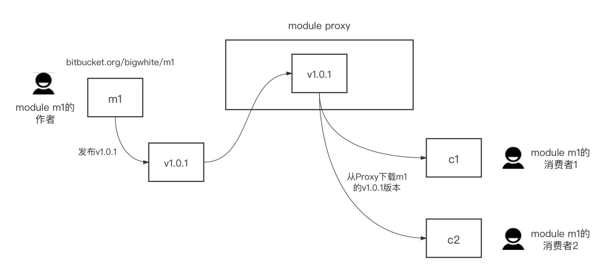
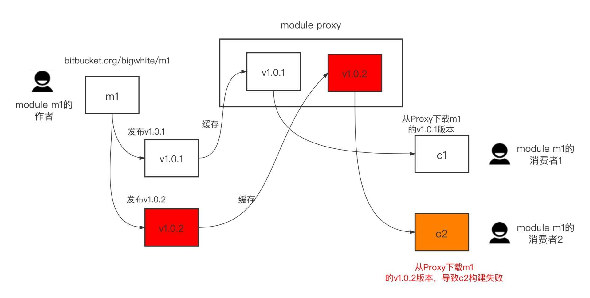
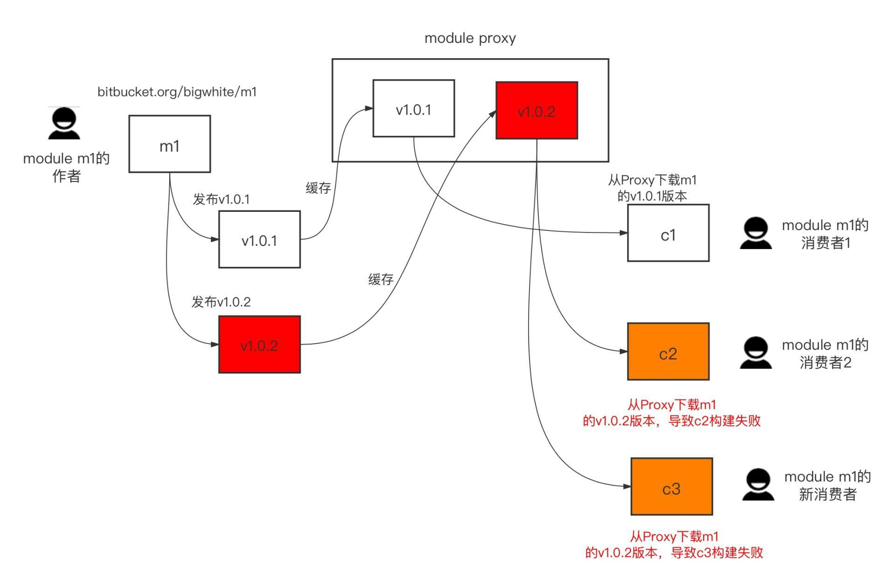
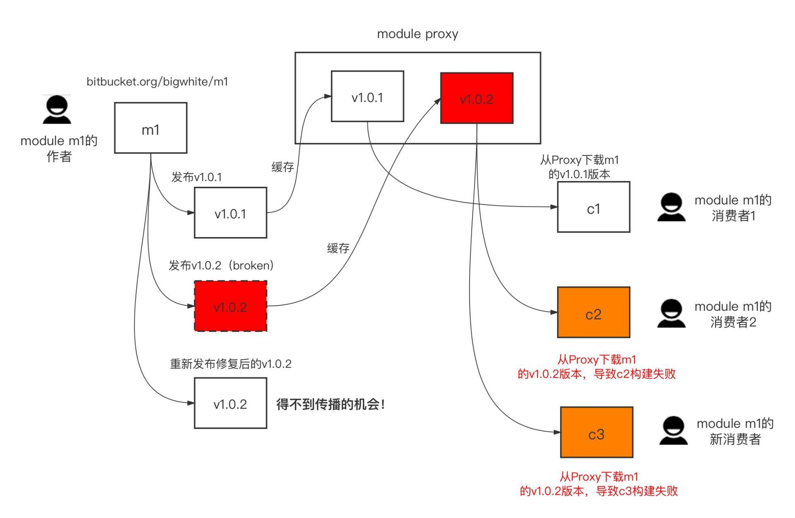
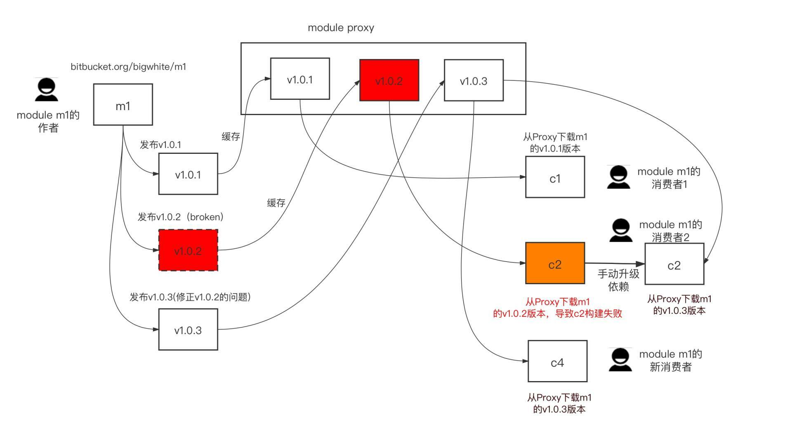
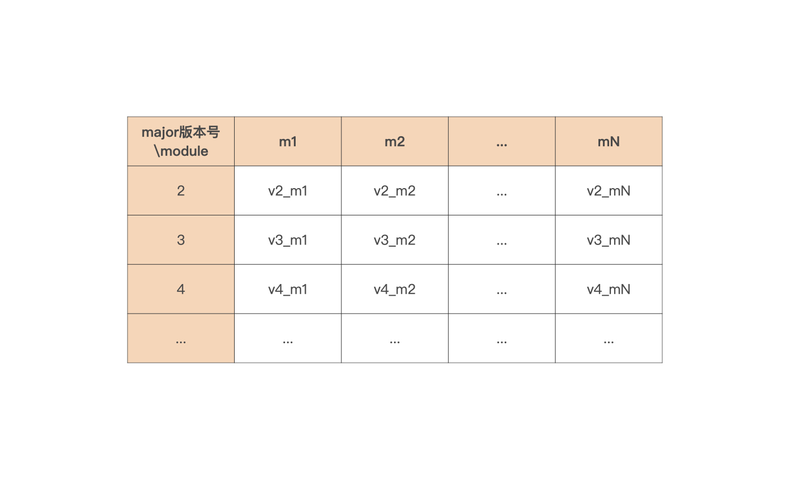

- 00 开篇词 这样入门Go，才能少走弯路.md.html
- 01 前世今生：你不得不了解的Go的历史和现状.md.html
- 02 拒绝“Hello and Bye”：Go语言的设计哲学是怎么一回事？.md.html
- 03 配好环境：选择一种最适合你的Go安装方法.md.html
- 04 初窥门径：一个Go程序的结构是怎样的？.md.html
- 05 标准先行：Go项目的布局标准是什么？.md.html
- 06 构建模式：Go是怎么解决包依赖管理问题的？.md.html
- 07 构建模式：Go Module的6类常规操作.md.html
- 08 入口函数与包初始化：搞清Go程序的执行次序.md.html
- 09 即学即练：构建一个Web服务就是这么简单.md.html
- 10 变量声明：静态语言有别于动态语言的重要特征.md.html
- 11 代码块与作用域：如何保证变量不会被遮蔽？.md.html
- 12 基本数据类型：Go原生支持的数值类型有哪些？.md.html
- 13 基本数据类型：为什么Go要原生支持字符串类型？.md.html
- 14 常量：Go在“常量”设计上的创新有哪些？.md.html
- 15 同构复合类型：从定长数组到变长切片.md.html
- 16 复合数据类型：原生map类型的实现机制是怎样的？.md.html
- 17 复合数据类型：用结构体建立对真实世界的抽象.md.html
- 18 控制结构：if的“快乐路径”原则.md.html
- 19 控制结构：Go的for循环，仅此一种.md.html
- 20 控制结构：Go中的switch语句有哪些变化？.md.html
- 21 函数：请叫我“一等公民”.md.html
- 22 函数：怎么结合多返回值进行错误处理？.md.html
- 23 函数：怎么让函数更简洁健壮？.md.html
- 24 方法：理解“方法”的本质.md.html
- 25 方法：方法集合与如何选择receiver类型？.md.html
- 26 方法：如何用类型嵌入模拟实现“继承”？.md.html
- 27 即学即练：跟踪函数调用链，理解代码更直观.md.html
- 28 接口：接口即契约.md.html
- 29 接口：为什么nil接口不等于nil？.md.html
- 30 接口：Go中最强大的魔法.md.html
- 31 并发：Go的并发方案实现方案是怎样的？.md.html
- 32 并发：聊聊Goroutine调度器的原理.md.html
- 33 并发：小channel中蕴含大智慧.md.html
- 34 并发：如何使用共享变量？.md.html
- 35 即学即练：如何实现一个轻量级线程池？.md.html
- 36 打稳根基：怎么实现一个TCP服务器？（上）.md.html
- 37 代码操练：怎么实现一个TCP服务器？（中）.md.html
- 38 成果优化：怎么实现一个TCP服务器？（下）.md.html
- 39 驯服泛型：了解类型参数.md.html
- 40 驯服泛型：定义泛型约束.md.html
- 41 驯服泛型：明确使用时机.md.html
- 元旦快乐 这是一份暂时停更的声明.md.html
- 加餐 作为Go Module的作者，你应该知道的几件事.md.html
- 加餐 如何拉取私有的Go Module？.md.html
- 加餐 我“私藏”的那些优质且权威的Go语言学习资料.md.html
- 加餐 聊聊Go 1.17版本的那些新特性.md.html
- 加餐 聊聊Go语言的指针.md.html
- 加餐 聊聊最近大热的Go泛型.md.html
- 大咖助阵 叶剑峰：Go语言中常用的那些代码优化点.md.html
- 大咖助阵 大明：Go泛型，泛了，但没有完全泛.md.html
- 大咖助阵 孔令飞：从小白到“老鸟”，我的Go语言进阶之路.md.html
- 大咖助阵 徐祥曦：从销售到分布式存储工程师，我与 Go 的故事.md.html
- 大咖助阵 曹春晖：聊聊 Go 语言的 GC 实现.md.html
- 大咖助阵 海纳：聊聊语言中的类型系统与泛型.md.html
- 期中测试 一起检验下你的学习成果吧.md.html
- 用户故事 罗杰：我的Go语言学习之路.md.html
- 结束语 和你一起迎接Go的黄金十年.md.html
- 结课测试 快来检验下你的学习成果吧！.md.html
- 捐赠
加餐 作为Go Module的作者，你应该知道的几件事
你好，我是Tony Bai。
我们的专栏在06和07讲对Go Module构建模式的原理，以及如何使用Go Module构建模式做了详细的讲解，在课后留言中，我看到很多同学直呼过瘾，表示终于搞清楚Go Module构建模式了。
不过，之前的讲解更多是从Go Module的使用者角度出发的。在这篇加餐中，我们再从Go Module的作者或维护者的视角，来聊聊在规划、发布和维护Go Module时需要考虑和注意什么事情，包括go项目仓库布局、Go Module的发布、升级module主版本号、作废特定版本的module，等等。
我们先来看看作为Go Module作者在规划module时遇到的第一个问题：一个代码仓库（repo）管理一个module，还是一个仓库管理多个module？
仓库布局：是单module还是多module
如果没有单一仓库（monorepo）的强约束，那么在默认情况下，你选择一个仓库管理一个module是不会错的，这是管理Go Module的最简单的方式，也是最常用的标准方式。这种方式下，module维护者维护起来会很方便，module的使用者在引用module下面的包时，也可以很容易地确定包的导入路径。
举个简单的例子，我们在github.com/bigwhite/srsm这个仓库下管理着一个Go Module（srsm是single repo single module的缩写）。
通常情况下，module path与仓库地址保持一致，都是github.com/bigwhite/srsm，这点会体现在go.mod中：
// go.mod
module github.com/bigwhite/srsm
go 1.17
然后我们对仓库打tag，这个tag也会成为Go Module的版本号，这样，对仓库的版本管理其实就是对Go Module的版本管理。
如果这个仓库下的布局是这样的：
./srsm
├── go.mod
├── go.sum
├── pkg1/
│ └── pkg1.go
└── pkg2/
└── pkg2.go
那么这个module的使用者可以很轻松地确定pkg1和pkg2两个包的导入路径，一个是github.com/bigwhite/srsm/pkg1，另一个则是github.com/bigwhite/srsm/pkg2。
如果module演进到了v2.x.x版本，那么以pkg1包为例，它的包的导入路径就变成了github.com/bigwhite/srsm/v2/pkg1。
如果组织层面要求采用单一仓库（monorepo）模式，也就是所有Go Module都必须放在一个repo下，那我们只能使用单repo下管理多个Go Module的方法了。
记得Go Module的设计者Russ Cox曾说过：“在单repo多module的布局下，添加module、删除module，以及对module进行版本管理，都需要相当谨慎和深思熟虑，因此，管理一个单module的版本库，几乎总是比管理现有版本库中的多个module要容易和简单”。
我们也用一个例子来感受一下这句话的深意。
这里是一个单repo多module的例子，我们假设repo地址是github.com/bigwhite/srmm。这个repo下的结构布局如下（srmm是single repo multiple modules的缩写）：
./srmm
├── module1
│ ├── go.mod
│ └── pkg1
│ └── pkg1.go
└── module2
├── go.mod
└── pkg2
└── pkg2.go
srmm仓库下面有两个Go Module，分为位于子目录module1和module2的下面，这两个目录也是各自module的根目录（module root）。这种情况下，module的path也不能随意指定，必须包含子目录的名字。
我们以module1为例分析一下，它的path是github.com/bigwhite/srmm/module1，只有这样，Go命令才能根据用户导入包的路径，找到对应的仓库地址和在仓库中的相对位置。同理，module1下的包名同样是以module path为前缀的，比如：github.com/bigwhite/srmm/module1/pkg1。
在单仓库多module模式下，各个module的版本是独立维护的。因此，我们在通过打tag方式发布某个module版本时，tag的名字必须包含子目录名。比如：如果我们要发布module1的v1.0.0版本，我们不能通过给仓库打v1.0.0这个tag号来发布module1的v1.0.0版本，正确的作法应该是打module1/v1.0.0这个tag号。
你现在可能觉得这样理解起来也没有多复杂，但当各个module的主版本号升级时，你就会感受到这种方式带来的繁琐了，这个我们稍后再细说。
发布Go Module
当我们的module完成开发与测试，module便可以发布了。发布的步骤也十分简单，就是为repo打上tag并推送到代码服务器上就好了。
如果采用单repo单module管理方式，那么我们给repo打的tag就是module的版本。如果采用的是单repo多module的管理方式，那么我们就需要注意在tag中加上各个module的子目录名，这样才能起到发布某个module版本的作用，否则module的用户通过go get xxx@latest也无法看到新发布的module版本。
而且，这里还有一个需要你特别注意的地方，如果你在发布正式版之前先发布了alpha或beta版给大家公测使用，那么你一定要提醒你的module的使用者，让他们通过go get指定公测版本号来显式升级依赖，比如：
$go get github.com/bigwhite/[email protected]
这样，go get工具才会将使用者项目依赖的github.com/bigwhite/srsm的版本更新为v1.1.0-beta.1。而我们通过go get github.com/bigwhite/srsm@latest，是不会获取到像上面v1.1.0-beta.1这样的发布前的公测版本的。
多数情况下，Go Module的维护者可以正确地发布Go Module。但人总是会犯错的，作为Go Module的作者或维护者，我们偶尔也会出现这样的低级错误：将一个处于broken状态的module发布了出去。那一旦出现这样的情况，我们该怎么做呢？我们继续向下看。
作废特定版本的Go Module
我们先来看看如果发布了错误的module版本会对module的使用者带去什么影响。
我们直接来看一个例子。假设bitbucket.org/bigwhite/m1是我维护的一个Go Module，它目前已经演进到v1.0.1版本了，并且有两个使用者c1和c2，你可以看下这个示意图，能更直观地了解m1当前的状态：

某一天，我一不小心，就把一个处于broken状态的module版本，[email protected]发布出去了！此时此刻，m1的v1.0.2版本还只存在于它的源仓库站点上，也就是bitbucket/bigwhite/m1中，在任何一个GoProxy服务器上都还没有这个版本的缓存。
这个时候，依赖m1的两个项目c1和c2依赖的仍然是[email protected]版本。也就是说，如果没有显式升级m1的版本，c1和c2的构建就不会受到处于broken状态的module v1.0.2版本的影响，这也是Go Module最小版本选择的优点。
而且，由于[email protected]还没有被GoProxy服务器缓存，在GOPROXY环境变量开启的情况下，go list是查不到m1有可升级的版本的：
// 以c2为例：
$go list -m -u all
github.com/bigwhite/c2
bitbucket.org/bigwhite/m1 v1.0.1
但如若我们绕开GOPROXY，那么go list就可以查找到m1的最新版本为v1.0.2（我们通过设置GONOPROXY来让go list查询m1的源仓库而不是代理服务器上的缓存）：
$GONOPROXY="bitbucket.org/bigwhite/m1" go list -m -u all
github.com/bigwhite/c2
bitbucket.org/bigwhite/m1 v1.0.1 [v1.0.2]
之后，如果某个m1的消费者，比如c2，通过go get bitbucket.org/bigwhite/[email protected]对m1的依赖版本进行了显式更新，那就会触发GOPROXY对[email protected]版本的缓存。这样一通操作后，module proxy以及m1的消费者的当前的状态就会变成这样：

由于Goproxy服务已经缓存了m1的v1.0.2版本，这之后，m1的其他消费者，比如c1就能够在GOPROXY开启的情况下查询到m1存在新版本v1.0.2，即便它是broken的：
// 以c1为例：
$go list -m -u all
github.com/bigwhite/c1
bitbucket.org/bigwhite/m1 v1.0.1 [v1.0.2]
但是，一旦broken的m1版本（v1.0.2）进入到GoProxy的缓存，那么它的“危害性”就会“大肆传播”开。这时module m1的新消费者都将受到影响！
比如这里我们引入一个新的消费者c3，c3的首次构建就会因m1的损坏而报错：

到这里，糟糕的情况已经出现了！那我们怎么作废掉[email protected]版本来修复这个问题呢？
如果在GOPATH时代，废掉一个之前发的包版本是分分钟的事情，因为那时包消费者依赖的都是latest commit。包作者只要fix掉问题、提交并重新发布就可以了。
但是在Go Module时代，作废掉一个已经发布了的Go Module版本还真不是一件能轻易做好的事情。这很大程度是源于大量Go Module代理服务器的存在，Go Module代理服务器会将已发布的broken的module缓存起来。下面我们来看看可能的问题解决方法。
修复broken版本并重新发布
要解决掉这个问题，Go Module作者有一个很直接的解决方法，就是：修复broken的module版本并重新发布。它的操作步骤也很简单：m1的作者只需要删除掉远程的tag: v1.0.2，在本地fix掉问题，然后重新tag v1.0.2并push发布到bitbucket上的仓库中就可以了。
但这样做真的能生效么？
理论上，如果m1的所有消费者，都通过m1所在代码托管服务器（bitbucket）来获取m1的特定版本，那么这种方法还真能解决掉这个问题。对于已经get到broken v1.0.2的消费者来说，他们只需清除掉本地的module cache（go clean -modcache），然后再重新构建就可以了；对于m1的新消费者，他们直接得到的就是重新发布后的v1.0.2版本。
但现实的情况时，现在大家都是通过Goproxy服务来获取module的。
所以，一旦一个module版本被发布，当某个消费者通过他配置的goproxy获取这个版本时，这个版本就会在被缓存在对应的代理服务器上。后续m1的消费者通过这个goproxy服务器获取那个版本的m1时，请求不会再回到m1所在的源代码托管服务器。
这样，即便m1的源服务器上的v1.0.2版本得到了重新发布，散布在各个goproxy服务器上的broken v1.0.2也依旧存在，并且被“传播”到各个m1消费者的开发环境中，而重新发布后的v1.0.2版本却得不到“传播”的机会，我们还是用一张图来直观展示下这种“窘境”：

因此，从消费者的角度看，m1的v1.0.2版本依旧是那个broken的版本，这种解决措施无效！
那你可能会问，如果m1的作者删除了bitbucket上的v1.0.2这个发布版本，各大goproxy服务器上的broken v1.0.2版本是否也会被同步删除呢？
遗憾地告诉你：不会。
Goproxy服务器当初的一个设计目标，就是尽可能地缓存更多module。所以，即便某个module的源码仓库都被删除了，这个module的各个版本依旧会缓存在goproxy服务器上，这个module的消费者依然可以正常获取这个module，并顺利构建。
因此，goproxy服务器当前的实现都没有主动删掉某个module缓存的特性。当然了，这可能也不是绝对的，毕竟不同goproxy服务的实现有所不同。
那这种问题该怎么解决呢？这种情况下，Go社区更为常见的解决方式就是发布module的新patch版本
发布module的新patch版本
我们依然以上面的m1为例，现在我们废除掉v1.0.2，在本地修正问题后，直接打v1.0.3标签，并发布push到远程代码服务器上。这样m1的消费者以及module proxy的整体状态就变成这个样子了：

在这样的状态下，我们分别看看m1的消费者的情况：
- 对于依赖[email protected]版本的c1，在未手工更新依赖版本的情况下，它仍然可以保持成功的构建；
- 对于m1的新消费者，比如c4，它首次构建时使用的就是m1的最新patch版v1.0.3，跨过了作废的v1.0.2，并成功完成构建；
- 对于之前曾依赖v1.0.2版本的消费者c2来说，这个时候他们需要手工介入才能解决问题，也就是需要在c2环境中手工升级依赖版本到v1.0.3，这样c2也会得到成功构建。
那这样，我们错误版本的问题就得到了缓解。
从Go 1.16版本开始，Go Module作者还可以在go.mod中使用新增加的retract指示符，标识出哪些版本是作废的且不推荐使用的。retract的语法形式如下：
// go.mod
retract v1.0.0 // 作废v1.0.0版本
retract [v1.1.0, v1.2.0] // 作废v1.1.0和v1.2.0两个版本
我们还用m1为例，我们将m1的go.mod更新为如下内容：
//m1的go.mod
module bitbucket.org/bigwhite/m1
go 1.17
retract v1.0.2
然后将m1放入v1.0.3标签中并发布。现在m1的消费者c2要查看m1是否有最新版本时，可以查看到以下内容（c2本地环境使用go1.17版本）：
$GONOPROXY=bitbucket.org/bigwhite/m1 go list -m -u all
... ...
bitbucket.org/bigwhite/m1 v1.0.2 (retracted) [v1.0.3]
从go list的输出结果中，我们看到了v1.0.2版本上有了retracted的提示，提示这个版本已经被m1的作者作废了，不应该再使用，应升级为v1.0.3。
但retracted仅仅是一个提示作用，并不影响go build的结果，c2环境（之前在go.mod中依赖m1的v1.0.2）下的go build不会自动绕过v1.0.2，除非显式更新到v1.0.3。
不过，上面的这个retract指示符适合标记要作废的独立的minor和patch版本，如果要提示用某个module的某个大版本整个作废，我们用Go 1.17版本引入的Deprecated注释行更适合。下面是使用Deprecated注释行的例子：
// Deprecated: use bitbucket.org/bigwhite/m1/v2 instead.
module bitbucket.org/bigwhite/m1
如果我们在module m1的go.mod中使用了Deprecated注释，那么m1的消费者在go get获取m1版本时，或者是通过go list查看m1版本时，会收到相应的作废提示，以go get为例：
$go get bitbucket.org/bigwhite/m1@latest
go: downloading bitbucket.org/bigwhite/m1 v1.0.3
go: module bitbucket.org/bigwhite/m1 is deprecated: use bitbucket.org/bigwhite/m1/v2 instead.
... ...
不过Deprecated注释的影响也仅限于提示，它不会影响到消费者的项目构建与使用。
升级module的major版本号
随着module的演化，总有一天module会出现不兼容以前版本的change，这就到了需要升级module的major版本号的时候了。
在前面的讲解中，我们学习了Go Module的语义导入版本机制，也就是Go Module规定：如果同一个包的新旧版本是兼容的，那么它们的包导入路径应该是相同的。反过来说，如果新旧两个包不兼容，那么应该采用不同的导入路径。
而且，我们知道，Go团队采用了将“major版本”作为导入路径的一部分的设计。这种设计支持在同一个项目中，导入同一个repo下的不同major版本的module，比如：
import (
"bitbucket.org/bigwhite/m1/pkg1" // 导入major版本号为v0或v1的module下的pkg1
pkg1v2 "bitbucket.org/bigwhite/m1/v2/pkg1" // 导入major版本号为v2的module下的pkg1
)
我们可以认为：在同一个repo下，不同major号的module就是完全不同的module，甚至同一repo下，不同major号的module可以相互导入。
这样一来，对于module作者/维护者而言，升级major版本号，也就意味着高版本的代码要与低版本的代码彻底分开维护，通常Go社区会采用为新的major版本建立新的major分支的方式，来将不同major版本的代码分离开，这种方案被称为“major branch”的方案。
major branch方案对于多数gopher来说，是一个过渡比较自然的方案，它通过建立vN分支并基于vN分支打vN.x.x的tag的方式，做major版本的发布。
那么，采用这种方案的Go Module作者升级major版本号时要怎么操作呢？
我们以将bitbucket.org/bigwhite/m1的major版本号升级到v2为例看看。首先，我们要建立v2代码分支并切换到v2分支上操作，然后修改go.mod文件中的module path，增加v2后缀：
//go.mod
module bitbucket.org/bigwhite/m1/v2
go 1.17
这里要特别注意一点，如果module内部包间有相互导入，那么在升级major号的时候，这些包的import路径上也要增加v2，否则，就会存在在高major号的module代码中，引用低major号的module代码的情况，这也是module作者最容易忽略的事情。
这样一通操作后，我们就将repo下的module分为了两个module了，一个是原先的v0/v1 module，在master/main分支上；新建的v2分支承载了major号为2的module的代码。major号升级的这个操作过程还是很容易出错的，你操作时一定要谨慎。
对于消费者而言，在它依赖的module进行major版本号升级后，他们只需要在这个依赖module的import路径的后面，增加/vN就可以了（这里是/v2），当然代码中也要针对不兼容的部分进行修改，然后go工具就会自动下载相关module。
早期Go团队还提供了利用子目录分割不同major版本的方案，我们也看看这种方式怎么样。
我们还是以bitbucket.org/bigwhite/m1为例，如果这个module已经演化到v3版本了，那么这个module所在仓库的目录结构应该是这样的：
# tree m1
m1
├── pkg1
│ └── pkg1.go
├── go.mod
├── v2
│ ├── pkg1
│ │ └── pkg1.go
│ └── go.mod
└── v3
├── pkg1
│ └── pkg1.go
└── go.mod
这里我们直接用vN作为子目录名字，在代码仓库中将不同版本module放置在不同的子目录中，这样，go命令就会将仓库内的子目录名与major号匹配并找到对应版本的module。
从描述上看，似乎这种通过子目录方式来实现major版本号升级，会更“简单”一些。但我总感觉这种方式有些“怪”，而且，其他主流语言也很少有用这种方式进行major版本号升级的。
另外一旦使用这种方式，我们似乎也很难利用git工具在不同major版本之间进行代码的merge了。目前Go文档中似乎也不再提这种方案了，我个人也建议你尽量使用major分支方案。
在实际操作中，也有一些Go Module的仓库，始终将master或main分支作为最高major版本的分支，然后建立低版本分支来维护低major版本的module代码，比如：etcd、go-redis等。
这种方式本质上和前面建立major分支的方式是一样的，并且这种方式更符合一个Go Module演化的趋势和作者的意图，也就是低版本的Go Module随着时间的推移将渐渐不再维护，而最新最高版本的Go Module是module作者最想让使用者使用的版本。
但在单repo多module管理方式下，升级module的major版本号有些复杂，我们需要分为两种情况来考虑。
第一种情况：repo下的所有module统一进行版本发布。
在这种情况下，我们只需要向上面所说的那样建立vN版本分支就可以了，在vN分支上对repo下所有module进行演进，统一打tag并发布。当然tag要采用带有module子目录名的那种方式，比如：module1/v2.0.0。
etcd项目对旗下的Go Module的统一版本发布，就是用的这种方式。如果翻看一下etcd的项目，你会发现etcd只会建立少量的像release-3.4、release-3.5这样的major分支，基于这些分支，etcd会统一发布moduleName/v3.4.x和moduleName/v3.5.x版本。
第二个情况：repo下的module各自独立进行版本发布。
在这种情况下，简单创建一个major号分支来维护module的方式，就会显得不够用了，我们很可能需要建立major分支矩阵。假设我们的一个repo下管理了多个module，从m1到mN，那么major号需要升级时，我们就需要将major版本号与module做一个组合，形成下面的分支矩阵：

以m1为例，当m1的major版本号需要升级到2时，我们建立v2_m1 major分支专门用于维护和发布m1 module的v2.x.x版本。
当然上述的矩阵是一个全矩阵(所有项中都有值)，实际项目中可能采用的是稀疏矩阵，也就是并非所有的表格项中都有值，因为repo下各个module的major号升级并不是同步的，有些module的major号可能已经升级到了4，但有些module的major号可能还停留在2。
小结
好了，今天的加餐讲到这里就结束了，现在我们一起来回顾一下吧。
在这一讲，我们更多从Go Module的作者或维护者的角度出发，去思考规划、发布和维护Go Module过程中可能遇到的问题以及解决方法。
Go Module经过多年打磨已经逐渐成熟，对各种Go Module仓库的布局方式都提供了很好的支持。通常情况下，我们会采用在单仓库单module的布局方式，无论是发布module打版本号还是升级major版本号，这种方式都简单易懂，心智负担低。
当然Go Module也支持在一个仓库下管理多个module，如果使用这种方式，要注意发布某module时，tag名字要包含module目录名，比如：module1/v1.0.1。
升级module的major版本号时，你一定要注意：如果module内部包间有相互导入，那么这些包的import路径上也要增加vN，否则就会存在在高major号的module代码中，引用低major号的module代码的情况，导致出现一些奇怪的问题。
此外，发布Go Module时你也一定要谨慎小心，因为一旦将broken的版本发布出去，要想作废这个版本是没有太好的方案的，现有的方案都或多或少对module使用者有些影响。尤其是采用单repo多module的布局方式时，发布module时更是要格外细心。
思考题
前面提到过，Go Module只有在引入不兼容的change时才会升级major版本号，那么哪些change属于不兼容的change呢？如何更好更快地识别出这些不兼容change呢？欢迎在留言区谈谈你的想法和实践。
欢迎你把这节课分享给更多感兴趣的朋友。我是Tony Bai，我们下节课见。
© 2019 - 2023 Liangliang Lee. Powered by gin and hexo-theme-book.